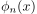
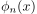
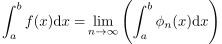
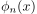

Riemannsche Integral
1. Definition
Sei  eine treppenapproximierbare Funktion mit einer Funktionenfolge , so dass gilt
eine treppenapproximierbare Funktion mit einer Funktionenfolge , so dass gilt
 1
1
Dann ist das Riemannshce Integral definiert als

2
Sei eine treppenapproximierbare Funktion mit einer Funktionenfolge , so dass gilt
1
Dann ist das Riemannshce Integral definiert als